Domínio
Uma equipa mantém premido o botão do dispositivo durante uns segundos para o capturar e pontua a cada intervalo enquanto o tiver. A outra equipa pode roubá-lo a qualquer momento.
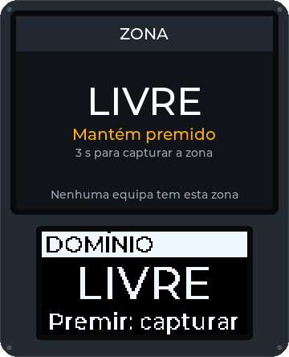
Os modos reagem à intenção («uma equipa está a capturar este dispositivo») e não ao hardware, por isso o mesmo script corre numa Field Box, numa caixa com teclado ou num telemóvel Android. Há catorze modos, um modificador e as Ligaduras já escritos e testados em software; ainda nenhum correu num campo a sério.
Cada animação abaixo é desenhada pelo código do próprio firmware da caixa de campo, não é uma maquete: o ecrã grande em cima e o pequeno OLED em baixo, à medida que um jogo do modo avança. O botão por baixo de uma imagem pára-a.
Uma equipa mantém premido o botão do dispositivo durante uns segundos para o capturar e pontua a cada intervalo enquanto o tiver. A outra equipa pode roubá-lo a qualquer momento.

Os atacantes armam a bomba e depois defendem-na; os defensores têm de a desarmar antes do fim da contagem. Uma explosão termina o jogo e os atacantes ganham. Arma-se e desarma-se a manter um botão premido, ou com um código de teclado para cada equipa.
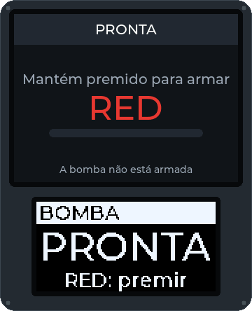
A Bomba em rondas, até acabar o tempo de jogo. Os atacantes armam a bomba, os defensores desarmam-na. Uma explosão é um ponto para os atacantes, um desarme um ponto para os defensores; depois a caixa descansa e começa a ronda seguinte. Vence a equipa com mais pontos.
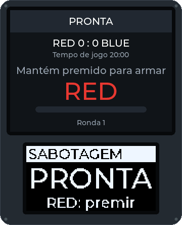
As equipas capturam caixas como no Domínio, mas uma equipa só pontua enquanto tiver todas as caixas ao mesmo tempo. Se perder uma, deixa de pontuar.
Os defensores começam com todas as zonas. Quando ficam reduzidos à última, corre uma contagem para a derrota até reconquistarem outra; se chegar ao fim, ganham os atacantes.
Cada participante leva uma etiqueta NFC assinada. Uma equipa lê numa estação as etiquetas que recolheu: a de alguém da equipa adversária confirma a baixa, a de alguém da própria equipa nega-a. Etiquetas falsificadas são recusadas.
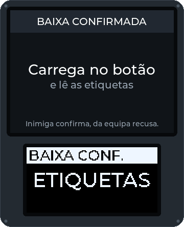
Um ponto de reentrada conta as vidas de cada equipa ou de cada pessoa, com um tempo de espera entre reentradas. Quando uma equipa fica sem vidas, é eliminada.
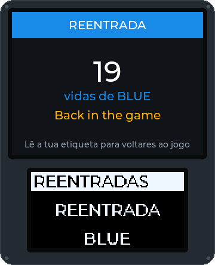
Cada participante regista-se num ponto de controlo com a sua etiqueta. A caixa conta as pessoas de cada equipa e pode dar pontos por cada registo.
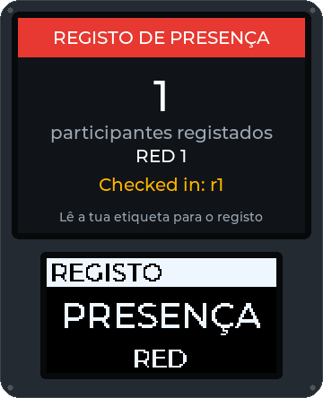
Ao lado de qualquer modo: a pessoa atingida lê a sua etiqueta e mantém premido um botão durante o tempo definido para receber o tratamento. O kit mostra quantas ligaduras restam; cada pessoa tem um número limitado de tratamentos por jogo, em todos os kits, a organização repõe um kit a partir da consola, e cada tratamento aparece no registo da organização e no ecrã de quem joga.
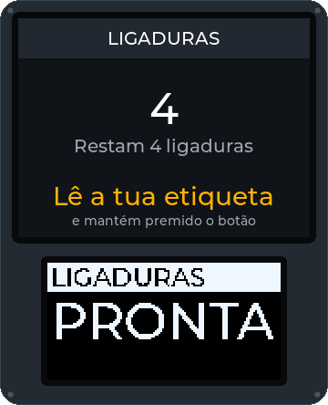
As equipas capturam uma caixa mestre e os seus satélites. Só a mestre pontua, e cada satélite que a mesma equipa tiver aumenta os seus pontos; quando a mestre muda de mãos, todos os satélites voltam a ficar neutros. Escrito e testado em software, ainda não jogado em caixas reais.
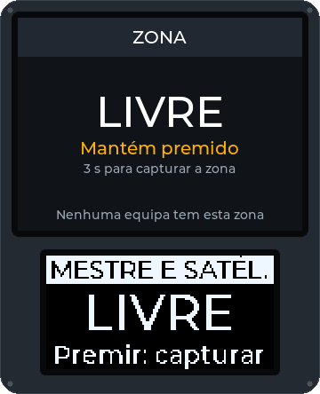
Um alvo acende-se na cor de uma equipa ao acaso durante alguns segundos, e um tiro que lhe acerte enquanto está aceso pontua para essa equipa. O jogo está escrito e testado em software; o módulo de alvo de que precisa (uma placa com um sensor de impacto e um anel de luz) ainda não está feito.
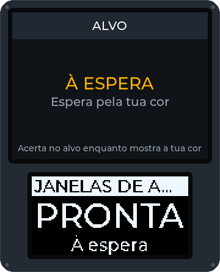
Um terminal propõe um enigma no teclado: descobrir um código pelos algarismos que estão no sítio certo, cortar os fios pela ordem certa, ou repetir uma sequência. Uma resposta errada bloqueia-o durante algum tempo. Resolvê-lo pode revelar um código para outro objetivo, dar pontos e capturar o terminal até outra equipa o voltar a hackear. Escrito e testado em software, ainda não jogado num telemóvel no campo.
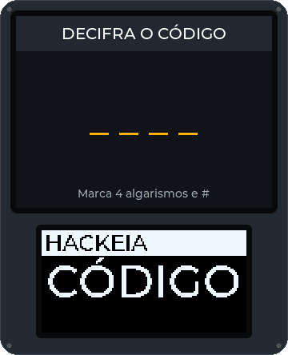
Uma equipa escolta o seu VIP, quem partilha a posição na app, ou uma carga, um telemóvel com GPS, até uma zona de extração; as outras tentam impedi-lo. Os pontos de controlo pelo caminho dão pontos enquanto uma equipa os tiver. As posições ficam no controlador de campo e no telemóvel; só sai o «extraído». Escrito e testado em software, ainda não jogado com GPS a sério.
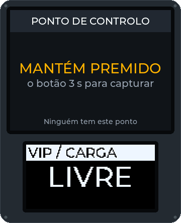
As equipas capturam caixas-fábrica, que fazem dinheiro enquanto as tiverem. Quem joga recolhe-o lendo a sua etiqueta na fábrica da sua equipa, leva-o pelo campo e deposita-o numa caixa-banco, onde vale pontos; o controlador de campo guarda o que cada pessoa leva, por isso o dinheiro pode ser recolhido numa caixa e depositado noutra. Quem recebe tratamento num kit de ligaduras perde o que leva, e a primeira equipa a depositar o objetivo pode ganhar. Escrito e testado em software, ainda não jogado em caixas a sério.
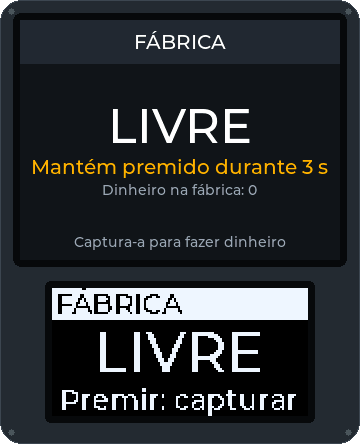
Várias caixas, mas só uma pode ser capturada de cada vez, e as duas equipas sabem qual. A equipa que tem a caixa ativa pontua por cada minuto completo; quando a tiver mantido o tempo necessário, a caixa fica completa para essa equipa e bloqueada, e a caixa seguinte da ordem é anunciada às duas equipas. A ordem é a lista da organização, o número das caixas ou aleatória; o jogo acaba quando a última caixa estiver completa, ou quando uma equipa chega à pontuação alvo. Escrito e testado em software, ainda não jogado em caixas a sério.
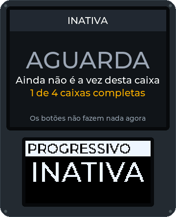
Corre ao lado de qualquer modo na mesma caixa: códigos no teclado dão pontos, pistas ou desbloqueios, e a organização vê quem usou cada código e que equipa tinha a caixa.
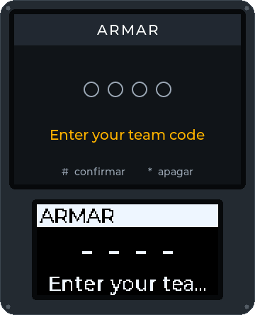
Capturar a bandeira, o modo do teu clube… Os modos são pequenos scripts. Propõe o teu com o modelo de ideia de modo de jogo ou partilha um modo acabado, como pacote assinado, no registo de modos.